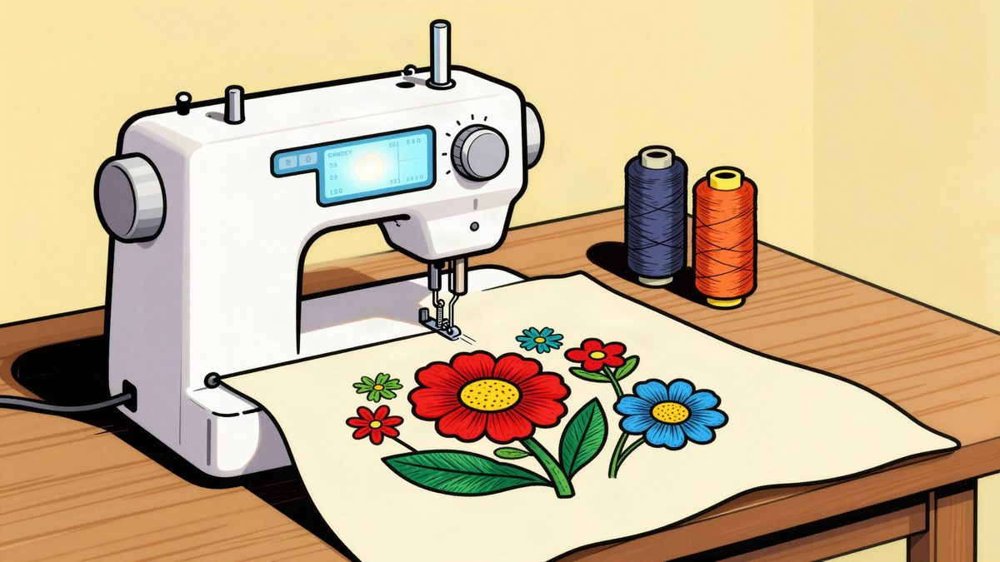

Djelatnica OpenAI-ja uz ChatGPT je napravila besplatni software za vezeći stroj umjesto pretplate od 12 dolara mjesečno

Kath Korevec, product managerica u OpenAI-ju, kupila je vezeći stroj Brother SKiTCH PP1 i umjesto plaćanja obvezne aplikacije napravila vlastitu uz pomoć ChatGPT-a. Aplikaciju ZigZag objavila je na GitHubu kao besplatan open-source software, a radi na Macu i Windowsima.
Kath Korevec, product managerica u OpenAI-ju, uz pomoć ChatGPT-a napravila je vlastitu aplikaciju za vezeći stroj Brother SKiTCH PP1 i objavila je na GitHubu kao besplatan open-source software. Aplikacija se zove ZigZag, radi na Macu i Windowsima, a zamjenjuje službenu aplikaciju za koju proizvođač traži pretplatu.
Korevec je stroj kupila na Amazonu za 300 dolara (oko 260 eura). Najveća zamjerka tom modelu je, kaže, obvezna aplikacija od 12 dolara mjesečno (oko 10 eura). Umjesto pretplate zatražila je od ChatGPT-a aplikaciju koja sa strojem komunicira izravno. Na X-u je 24. listopada 2026. objavila prvu najavu, a 28. listopada snimku i video na kojem se vidi da software radi i da stroj veze prema njezinim dizajnima. Napisala je da radi iznenađujuće dobro, a sljedeći su joj projekt personalizirane kape.
Što ZigZag može
Zbog velikog zanimanja Korevec je projekt objavila javno. ZigZag pretvara SVG slike u strojni vez, a stitcheve je moguće ručno doraditi u ugrađenom editoru. Gotove dizajne moguće je izvesti u formatima PES, DST, EXP, JEF i VP3, pa software radi sa širokim rasponom vezećih strojeva. Dizajn se na SKiTCH PP1 šalje izravno preko Bluetootha.
Aplikacija podržava i MCP, protokol za povezivanje AI agenata s alatima, pa dizajne za vez može stvarati i uređivati AI agent. Korevec je u prvoj objavi kao jednu od primjena spomenula i generativne vezene zakrpe.
ZigZag omogućuje izvoz dizajna u formatima PES, DST, EXP, JEF i VP3, pa je kompatibilan sa širokim rasponom vezećih strojeva, dok se izravno preko Bluetootha može povezati sa strojem SKiTCH PP1.
Izvor: Gigazine